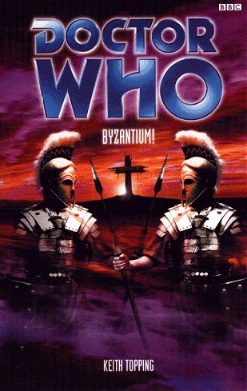

|
Byzantium!
|
BASIC PLOT DOCTOR COMPANIONS MATERIALISATION CIRCUIT PREPARATORY READING CONTINUITY REFERENCES Pg 8 "She held out her black gloved hand. 'Julia,' she said brightly." Dr Julia Franklin and Sgt Robert Franklin were first introduced in The Devil Goblins from Neptune (pg 128) and appeared in The Hollow Men and The King of Terror. Pg 24 "The bottomless chasm of time and space did, seemingly, have a bottom after all." This follows on from the cliffhanger ending to The Rescue. Pg 27 Reference to Susan. Pg 29 "You said that about the Aztecs once, remember?" The Aztecs. Pg 30 "I mean, since Mexico I've..." The Aztecs. Pg 31 "Her destiny was mapped for her thousands of years before she was born." The Myth Makers. Pg 32 Reference to Susan. Pg 78 "Or Skaro, for that matter." The Daleks. Pg 96 "I was eleven when my mother died [...] She was going to call me Tanni" The original character outline for The Rescue called the new companion Tanni, but this was later changed to Vicki. Pg 114 "She was grateful that the TARDIS crew had saved her life on Dido from the madman Bennett and his deranged schemes." The Rescue. Pg 128 "A man being regenerated... Whatever next?" This is just a joke on the Doctor's behalf, because a later reference shows that he knows all about regeneration. Pg 134 Reference to Daleks and Thals. Pg 136 Reference to The Aztecs. Pg 149 "In France and Mexico. On Skaro and Mondas and Cassuragi." The Reign of Terror, The Aztecs, The Daleks and two unknown references (although Mondas was first seen in The Tenth Planet). "A tavern on Rigel during the Draconian purges." Unknown adventure, although the Draconians were first introduced in Frontier in Space. Pg 150 References to Venusian Opera (Venusian Lullaby) and Susan. Pg 154 Her mother dying shortly before she and her father left Earth for a new life in 1493. Dido and Koquillion." The Rescue. Pg 160 "He would live and regenerate and live and regenerate and live and regenerate and,maybe, in two thousand years he would be in the right place at the right time to find an escape route from this alluring, yet primitive, world." The Doctor does know of regeneration. Pg 179 "Forget the Aztecs, the French Revolution, or Marco Polo." The Aztecs, The Reign of Terror, Marco Polo. "Because he had collaborated with Shakespeare between draft one and draft two of Hamlet." City of Death. Pg 193 Reference to the food machine, seen in the early stories. Pg 196 "Cursing the dark November evening in London that she and Ian Chesterton had decided to investigate their mysterious and unearthly child." An Unearthly Child. Pg 202 "Rust Never Sleeps" This chapter title also appears in City of the Dead (for good reason), although its appearance here is a mystery. Pg 238 "She befriended a Greek woman named Cressida" Is this supposed to be an older Vicki, post-The Myth Makers? If so, see continuity cock-ups. Pg 255 Reference to Dido. OLD FRIENDS AND OLD ENEMIES Johnny Chesterton, although technically this is his one and only appearance. He's been mentioned a lot under the name "Johnny Chess", starting from Love and War. NEW FRIENDS AND NEW ENEMIES Gemellus, Thalius and General Gaius Calaphilus.
CONTINUITY COCK-UPS PLUGGING THE HOLES [Fan-wank theorizing of how to fix continuity cock-ups] FEATURED ALIEN RACES FEATURED LOCATIONS Byzantium, AD 64 IN SUMMARY - Robert Smith? |
|
 |